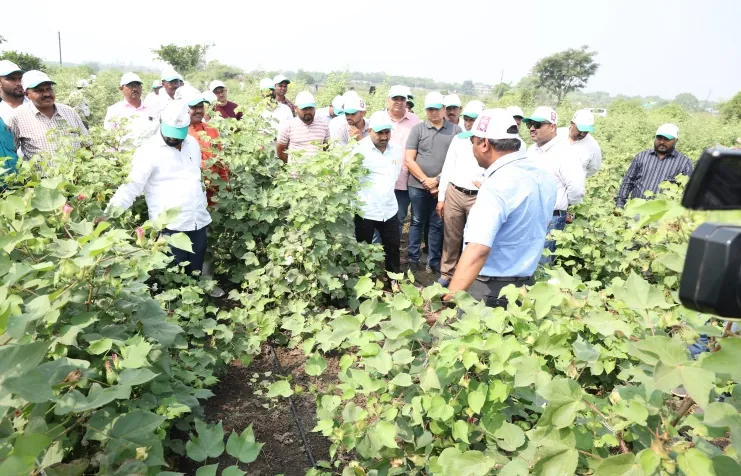

LIFE IN THE FIELDS
Rooted in the land.
Growing together.
Real moments from the farms, crop visits and conversations that shape each growing season around Akola.
Explore the gallery ↓
FIELD NOTES · AKOLA01 / IN THE FIELDS
Fields & growing.
From broad field views to the rows where each new season takes shape.
02 / A CLOSER LOOK
Seeds & crop details.
Small details tell a bigger story about the crop, the seed and the care behind each season.
03 / PEOPLE & PARTNERSHIPS
Farmers & community.
Good growing starts with listening, learning and staying connected to the people who know their fields best.
04 / SEED SUPPORT & PARTNERS
Local knowledge.
Support close to home.
A look at the people and places that keep seed conversations connected to local growers.
LOCAL CONNECTIONS · AKOLA
From conversations with farmers to visits with local agriculture retailers, relationships are an important part of every growing season.
ROOTED IN AKOLA